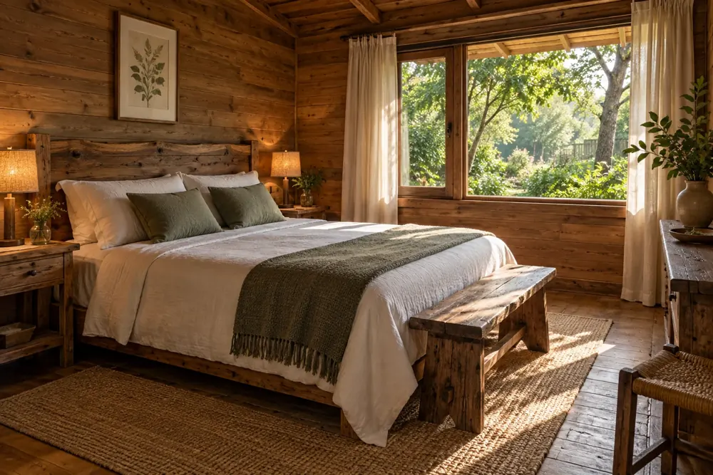

Tardes de pileta
Un espacio compartido para refrescarse y disfrutar del parque.
GUALEGUAYCHÚ · ENTRE RÍOS
Cuatro cabañas, aire libre y tiempo para bajar el ritmo. Encontrá tu próxima pausa en Valhalla 5 km.
01 / EL LUGAR
Un espacio para descansar cerca de Gualeguaychú. Cabañas equipadas, parrilla individual y un parque con pileta para disfrutar los días al aire libre.

IMAGEN ILUSTRATIVA02 / TU DESCANSO
Cada cabaña está pensada para una estadía cómoda, con cama matrimonial, cama nido y lo necesario para disfrutar a tu propio ritmo.
03 / PEQUEÑOS GRANDES PLANES
Un espacio compartido para refrescarse y disfrutar del parque.
El ritual de cocinar al aire libre, con una parrilla en cada cabaña.
En el camino a Ñandubaysal, con Gualeguaychú a pocos minutos en auto.
04 / PLANIFICÁ TU ESCAPADA
Seleccioná ingreso y salida. Vamos a consultar la disponibilidad de esas fechas por WhatsApp y te responderán personalmente.
La disponibilidad y la tarifa se confirman al consultar; este calendario no muestra reservas en tiempo real.
Seleccioná primero el ingreso y luego la salida.
05 / CÓMO LLEGAR
Camino a Ñandubaysal, km 5, Gualeguaychú, Entre Ríos.
Abrir indicaciones